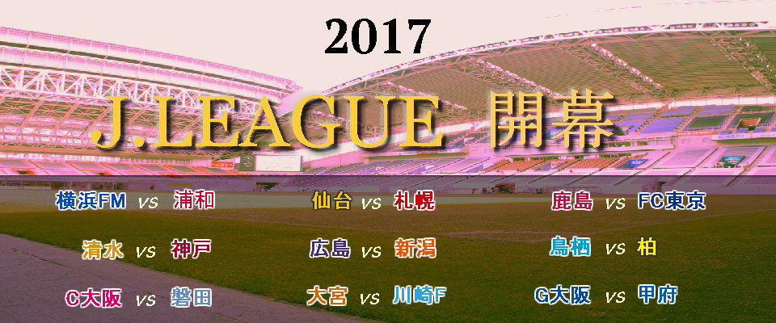

J1試合
| HOME | スコア | AWAY | キックオフ |
|---|---|---|---|
| 横浜FM | --- | 浦和 | 12:30 |
| 仙台 | --- | 札幌 | 14:00 |
| 鹿島 | --- | F東京 | 14:00 |
| 清水 | --- | 神戸 | 14:00 |
| 広島 | --- | 新潟 | 14:00 |
| 鳥栖 | --- | 柏 | 14:00 |
| C大阪 | --- | 磐田 | 15:00 |
| 大宮 | --- | 川崎F | 16:00 |
| G大阪 | --- | 甲府 | 17:00 |
J2試合
| HOME | スコア | AWAY | キックオフ |
|---|---|---|---|
| 福岡 | --- | 大分 | 13:00 |
| 長崎 | --- | 群馬 | 13:00 |
| 熊本 | --- | 讃岐 | 13:00 |
| 水戸 | --- | 湘南 | 14:00 |
| 町田 | --- | 千葉 | 14:00 |
| 横浜C | --- | 松本 | 14:00 |
| 名古屋 | --- | 岡山 | 14:00 |
| 讃岐 | --- | 山口 | 14:00 |
| 京都 | --- | 山形 | 14:00 |
| 徳島 | --- | 東京V | 14:00 |
| 愛媛 | --- | 金沢 | 15:00 |
J3試合
| HOME | スコア | AWAY | キックオフ |
|---|---|---|---|
| YS横浜 | --- | 福島 | 13:00 |
| 鹿児島 | --- | 藤枝 | 14:00 |
| 栃木 | --- | 琉球 | 13:00 |
| 相模原 | --- | 長野 | 13:00 |
| 北九州 | --- | 秋田 | 14:00 |
| F東京23 | --- | 富山 | 14:00 |
| G大阪23 | --- | 鳥取 | 14:00 |
| C大阪23 | --- | 盛岡 | 14:00 |
注目の選手
小川航基（ジュビロ磐田） Age.19
昨年加入した桐光学園出身のFW。昨年の公式試合の出場はルヴァン杯の1試合のみ。
今年は出場はもちろんのこと、ゴールも期待したいところだ。
注目のニュース
-
静岡ダービーは磐田が完勝
磐田 3 - 1 清水
約4万人の観客が見守る中行われた静岡ダービー。4年ぶりということもあり、サポーターのボルテージは最高潮に達した。この試合で輝きを放ったのは磐田の中村俊輔だった。セットプレー2つを含む全3得点に絡み、存在感を見せつけた。
次節は古巣の横浜FM戦、中村は「平常心でいきたい」と言っていたが、その目は静かに闘志を燃やしているように思えた。 -
浦和が首位神戸を撃破
神戸 1 - 3 浦和
浦和は4連勝中の首位神戸のホームに乗り込んだ。多くの選手が「前半戦の山場」と語る中で行われた一戦。
柏木、遠藤航のゴールで浦和が2点をリードする。しかし、試合終盤に神戸が一瞬のスキをつき、1点を返す。
それでも浦和が、この日MVPの柏木の得点でロスタイムに突き放し、常勝チームの貫禄を見せつけた。 -
C大阪が公式戦3連勝
C大阪 2 - 0 横浜FM
今シーズン、ルヴァン杯で対戦した両チームだが、2度目の対戦もC大阪が制した。
横浜FMにほとんど決定的な形を作らせず、前半をスコアレスで終えた。試合はセットプレーからルヴァン杯でも活躍した木本がボレーを叩き込む。
1点ビハインドの横浜FMは、齋藤学を中心に果敢に攻めたてる。それでもキムジンヒョンを中心としたC大阪の守備は崩れず、逆にカウンターからPKを得る。これをキャプテン柿谷が冷静に流し込み、公式戦3連勝を飾った。